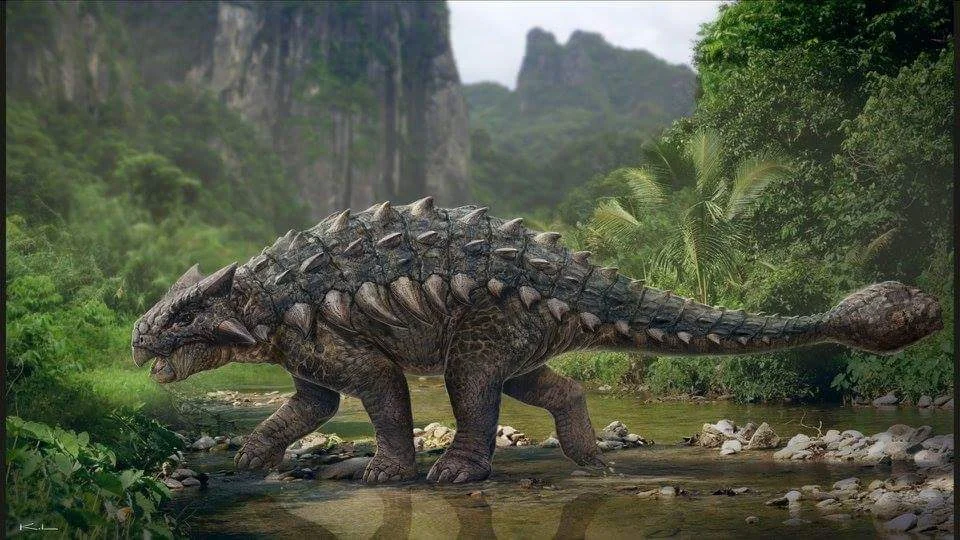

Ankylosaurus (em português Anquilossauro do grego significando "lagarto fundido") é um gênero de dinossauro encouraçado herbívoro que viveu durante o final do período Cretáceo, no território que corresponde hoje à América do Norte. Trata-se de um gênero monotípico descoberto em 1908 por Barnum Brown, cuja única espécie e tipo, é denominada Ankylosaurus magniventris. O nome do gênero vem do grego significa "lagarto fundido" ou "lagarto curvo", e o nome específico significa "grande barriga". Um punhado de espécimes foi escavado até agora, mas um esqueleto completo não foi descoberto. Embora outros membros do clado Ankylosauria sejam representados por um material fóssil mais extenso, o Ankylosaurus é frequentemente considerado o membro arquetípico de seu grupo, apesar de ter algumas características incomuns. Estes animais pesavam entre 7 a 9 ton e mediam cerca de 9 m de comprimento e 2 m de altura.
